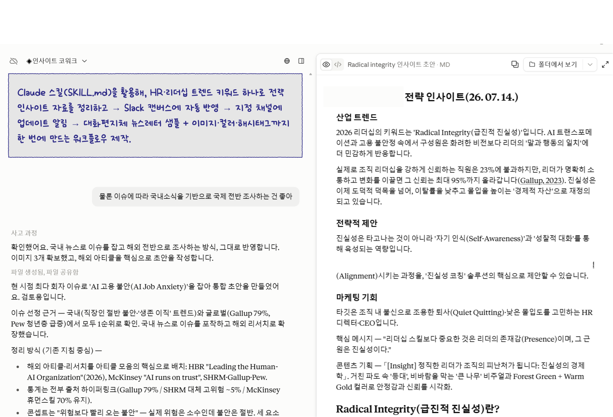

키워드 하나로 HR 인사이트 워크플로우 설계

WORKFLOWHR·리더십 키워드 하나를 입력하면 전략 인사이트 자료를 정리하고, Slack Canvas 반영 → 지정 채널 알림 → 뉴스레터 초안과 이미지·컬러·해시태그 제안까지 이어지는 워크플로우를 만들었습니다.
반복되는 리서치·구조화·Slack 공유·콘텐츠 제안 과정을 재사용 가능한 스킬로 만들면, 결과 편차를 줄이고 팀에 더 빠르게 공유할 수 있을까?
디자인 외에도 HR·리더십 인사이트 자료를 만들어 팀에 공유하는 업무를 자원해 맡고 있었습니다. 키워드가 정해질 때마다 리서치 → 구조화 → Slack Canvas 반영 → 채널 알림 → 뉴스레터 초안 제안까지 반복했고, 포맷·톤·출처 기준이 조금씩 달라지는 문제가 있었습니다. 반복 작업을 규칙으로 고정해 지속 가능하고 이관 가능한 형태로 만들고 싶었습니다.
• 실제 키워드 ‘Radical Integrity’로 전체 흐름을 처음부터 끝까지 테스트했습니다
• HBR·Gallup·McKinsey·Russell Reynolds 등 신뢰할 수 있는 아티클과 검증된 통계만 수집했습니다
• 강조 부호 제거, 통계 옆 출처 링크, 검색 결과 URL 제외 등 작성 규칙을 고정했습니다
• 최신 항목이 Slack Canvas 상단에 쌓이도록 반영하고, 초안 승인 후 채널 알림이 나가도록 구성했습니다
• CANVAS_ID·NOTIFY_CHANNEL·ORG_NAME·SIGNATURE 등 개인·조직 값을 설정값으로 분리하고, insight-cowork SKILL.md로 문서화해 패키징했습니다
검색 결과 페이지 URL은 문단의 근거로 쓰기에 부정확했고, Canvas 편집 액션도 문서 설명과 실제 동작이 달라 중복이 생기는 지점이 있었습니다. 또 캔버스 ID·채널·발신 명의 같은 값을 하드코딩하면 보안과 재사용성이 떨어졌습니다.
검색 결과가 아니라 문단의 주장과 가장 맞는 특정 아티클을 인라인 출처로 배치했습니다. Canvas 반영 전에는 현재 section_id를 확인하고, 실행 후 중복·손실을 다시 검증하도록 했습니다. 개인·조직 값은 설정값으로 분리하고, Canvas 반영과 알림은 반드시 초안 승인 후 실행하도록 규칙화했습니다.
도구의 동작은 문서 설명만 믿기보다 실제 실행 결과를 다시 확인해야 했습니다. 출처도 “검색됨”에서 끝나는 것이 아니라 문단의 주장과 가장 잘 맞는 특정 아티클을 골라야 신뢰가 생겼습니다. 개인값을 설정값으로 분리하고, 승인 절차와 문체 규칙까지 포함해야 다른 사람도 재사용할 수 있는 스킬이 된다는 점을 배웠습니다.
• 키워드가 많아질 때 서브에이전트 병렬 조사와 결합할지 검토하기
• 주간 스케줄 자동 실행 가능성 검토하기
• 뉴스레터 톤과 이미지 규칙을 실제 수신자 피드백으로 보완하기
• Unsplash 검색 링크에서 특정 사진 URL을 확정하는 로직 고도화하기